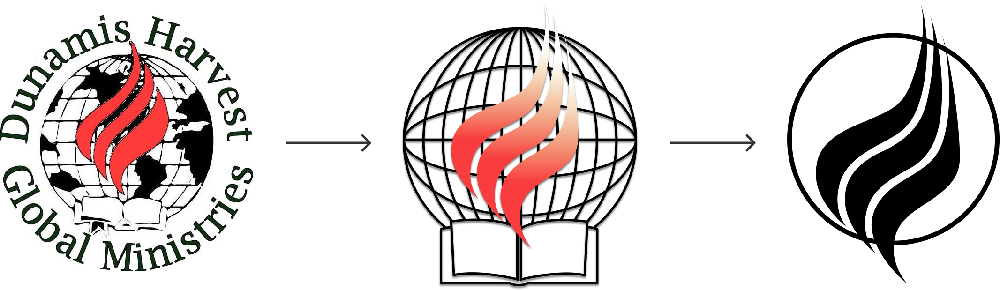

SUMMARY
This website is for a nonprofit called
Dunamis Harvest Global Ministries, which is owned by a small
Korean church originally based in Honolulu, Hawaii. The leadership
team needed a website to share their ministry and feature the work
they did in Asia. I helped with designing, branding, prototyping,
and coding the website.
RESEARCH
- The leadership team anticipated that the people most likely to
use their website are members of their church.
- The church itself has around 20 consistent members, making this
a very small church. Most members are Korean elders from the Baby
Boomer generation and struggle with using technology. The one
exception is a family of four consisting of Millennial parents
and two children attending middle/high school. The father in the
family is also responsible for most of the tech-related needs of
the church.
-
Churches are much slower to adopt technology, with 46% of church
leaders discouraging the use of tech in the pews. However, 92% of
churches agree that Facebook is the most effective tool to reach
members in social media.
- 80% of nonprofits say that their website is the
most important
communications channel for outreach. 70% of nonprofits encourage
online giving, while 42% of churches do the same.
COMPETITIVE ANALYSIS
I wanted to see the kind of designs and features that religious
organizations and other small nonprofits have. I evaluated what
strengths and weaknesses of each website I should consider.
NODUTDOL
Korean Anti-imperialist Nonprofit
FAITH CHURCH
Mid-sized Korean Church
STRENGTH:
- Minimalist design, whitespace makes dark colors stand out
- Easy to see important items on the home page, uses strong
visual elements
- Bilingual (English & Korean)
STRENGTH:
- Simple website design, very easy to navigate
- Easy to find the information needed
- Bilingual (English & Korean)
WEAKNESS:
- Text in logo difficult to read due to smaller size
- Navigation bar organization inconsistencies in desktop and mobile
WEAKNESS:
- Underdeveloped design, lacking logo and cohesive color scheme
- Some pages are disorganized, have too much information
HOUSE FOR ALL SINNERS & SAINTS
Mid-sized Affirming Church
PRINCE OF PEACE LUTHERAN CHURCH
Small Affirming Church
STRENGTH:
- Beautiful typography, colors, and graphics
- A clear statement of values
- Interesting design elements can be visually stimulating
STRENGTH:
- Simple design and home page layout
- A clear statement of values
- Incorporates leadership team’s personalities
WEAKNESS:
- Difficult to navigate, with two navigation bars present on the desktop
- Low quality of photos and images
WEAKNESS:
- Difficult to navigate to find information, too many subpages
- Dated design
USER PERSONA
Based on the information I have about the church membership and the
kind of users the leadership team hopes to attract, I constructed
the following personas:
INQUISITIVE AHJUSSHI
retired church elder
SUPPORTIVE HALMONI
regular church attendee
NEWCOMER SAMONIM
interested millennial
GOALS:
- Familiar with the leadership team and wants to learn more
about the missions they previously worked on
- Wants to contact leadership team to offer support
GOALS:
- Knows the leadership team and wants to learn about what
future missions her home church will be involved in
- Wants an easy way to financially support missions
GOALS:
- Unfamiliar with the church and wants to know the mission
statement
- Wants to connect with the leadership team to get more
information
DIFFICULTIES:
- Navigating web pages to get the information he needs
DIFFICULTIES:
- Struggles with technology
- ESL
DIFFICULTIES:
- Finding a church mission that she can relate to
IDEATION
I used several different design iterations for this website,
starting with brighter colors before settling with a more muted
brown for the final version of the website.
First iteration of website
Second iteration of website
Third iteration of website

SITEMAP
TASK FLOW
LOW FIDELITY
MID FIDELITY
VIEW PROTOTYPE
BRANDING & LOGO
I updated the existing logo. The old one was hand-drawn and
outdated, so I created a vector design that maintained the integrity
of the old logo while giving it a more modern and streamlined
appearance:

STYLE GUIDE
WEBSITE COPY
Because the leadership team consists of native Korean speakers who
speak English as a second language, their website copy needed to be
reviewed. I rewrote the written portion of the website, checking it
for grammar, clarity, and tone.
FINAL PROTOTYPE
After deciding on the branding, I coded the final prototype using
HTML, CSS, and Javascript using responsive design. Using Github, I
pushed the project to Dunamis’ official website. You can view their
preliminary website here:
VIEW WEBSITE
NEXT STEPS
- MINISTRY PAGE: The client was unable to locate the
full documents detailing the missions they participated in
when they were in the Global South, which delayed the page from
being fully fleshed out. When the information becomes readily
available, it will then be possible to finish that portion of the
website.
- KOREAN LANGUAGE: Because many members looking for
this website are Korean speakers, it is important to add a Korean
language component to this website in the future.
- USER TESTING: More testing is required so we can make
adjustments needed to make sure this website is easy for the
senior population to navigate.
- SOCIAL MEDIA: Create a Facebook page for the ministry and
include that on the website, since it could help with outreach.
If they are interested in expanding, this might be a good resource
to have.